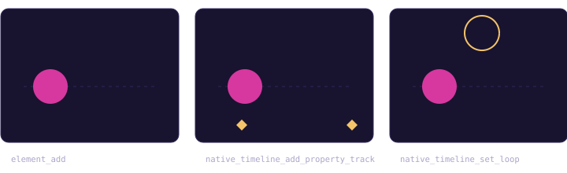

Canvas
Draw shapes and paths, select with eight resize handles, set fill, stroke and stroke-width presets in the inspector.
Native Rust, a real timeline, 53 MCP tools. Open a document, point Codex or Claude Code at it, and watch the canvas change.
macOS 13+ · Apple Silicon · MPL-2.0 · alpha
The app runs as the MCP server itself, over stdio. Each call is applied to the document you are looking at.
Add a circle, move it right over two seconds with ease-in-out, loop it, and export a GIF.

Illustrative sequence. Tool names are real; arguments are abbreviated.
Draw shapes and paths, select with eight resize handles, set fill, stroke and stroke-width presets in the inspector.
Property tracks, keys, loop playback and a bezier easing editor. Timeline edits share the project undo history.
Our own SVG decoder and renderer in Rust, no webview. Q, T and S path commands and gradients work. Arc commands do not yet.
batch applies ordered scene and timeline operations as one undo step, rolling back on the first failure by default.
GIF, APNG, PNG frame sequence, MP4 and MOV in H.264 or HEVC, plus HEVC with alpha.
A macOS app in Rust with native panels. Apple Silicon, macOS 13 or later.
The same cubic-bezier model as the app's easing editor. Focus a handle and use the arrow keys for 0.01 steps, or Shift for 0.1.
Export is also an MCP tool, export_animation.
An agent drives the open document over MCP, the native timeline plays, and exports come out the other end.
cargo run -p vexel-dev -- bench.There is no download yet. Requires an Apple Silicon Mac, macOS 13+ and rustup; the pinned toolchain installs itself.
cargo build --release -p vexel-app
./build/rust/aarch64-apple-darwin/release/vexelServe MCP on stdio from the same binary with --mcp-preview; --grant-dir (repeatable) limits which folders it may read and write.
./build/rust/aarch64-apple-darwin/release/vexel --mcp-preview --grant-dir /Users/me/ArtworkAdd to ~/.codex/config.toml. Use absolute paths.
[mcp_servers.vexel]
command = "/absolute/path/to/vexel/build/rust/aarch64-apple-darwin/release/vexel"
args = ["--mcp-preview", "--grant-dir", "/Users/me/Artwork"]
startup_timeout_sec = 10
tool_timeout_sec = 60Register at user scope:
claude mcp add vexel --scope user -- \
/absolute/path/to/vexel/build/rust/aarch64-apple-darwin/release/vexel \
--mcp-preview --grant-dir /Users/me/ArtworkOr a project .mcp.json:
{
"mcpServers": {
"vexel": {
"type": "stdio",
"command": "/absolute/path/to/vexel/build/rust/aarch64-apple-darwin/release/vexel",
"args": ["--mcp-preview", "--grant-dir", "/Users/me/Artwork"]
}
}
}Pre-release software. Things work, and some things are missing.
Limitations. No Developer ID signing or notarization, so build from source. The real-window UI end-to-end script is written but has not been run live, and GUI end-to-end tests do not run on hosted CI. Details in STATUS.md.